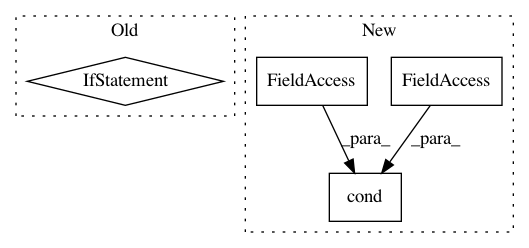

5cee7220217599ceccb191adf430eb914d148f87,official/vision/keras_cv/ops/box_matcher.py,BoxMatcher,__call__,#BoxMatcher#Any#,78
Before Change
return matches
if similarity_matrix.shape.is_fully_defined():
if similarity_matrix.shape.dims[0].value == 0:
return _match_when_rows_are_empty()
else:
return _match_when_rows_are_non_empty()
else:
return tf.cond(
pred=tf.greater(tf.shape(similarity_matrix)[0], 0),
true_fn=_match_when_rows_are_non_empty,
After Change
num_gt_boxes = similarity_matrix.shape.as_list()[0] or tf.shape(
similarity_matrix)[0]
return tf.cond(
pred=tf.greater(num_gt_boxes, 0),
true_fn=_match_when_rows_are_non_empty,
false_fn=_match_when_rows_are_empty)
def _set_values_using_indicator(self, x, indicator, val):
Set the indicated fields of x to val.
In pattern: SUPERPATTERN
Frequency: 4
Non-data size: 4
Instances
Project Name: tensorflow/models
Commit Name: 5cee7220217599ceccb191adf430eb914d148f87
Time: 2020-09-17
Author: tanzheny@google.com
File Name: official/vision/keras_cv/ops/box_matcher.py
Class Name: BoxMatcher
Method Name: __call__
Project Name: broadinstitute/keras-rcnn
Commit Name: df93c4e61e7ca1db25f1ee346ac0516685498b02
Time: 2017-08-15
Author: allen.goodman@icloud.com
File Name: keras_rcnn/backend/tensorflow_backend.py
Class Name:
Method Name: bbox_transform_inv
Project Name: ray-project/ray
Commit Name: 80d314ae5eaadc88061a62c827e1b8670098c1ab
Time: 2020-03-12
Author: sven@anyscale.io
File Name: rllib/utils/exploration/random.py
Class Name: Random
Method Name: get_tf_exploration_action_op
Project Name: brightmart/text_classification
Commit Name: a4697b180d4d8f5a7debbf292b6b34cbbbc4df87
Time: 2018-11-23
Author: brightmart@hotmail.com
File Name: a00_Bert/bert_modeling.py
Class Name: BertModel
Method Name: __init__